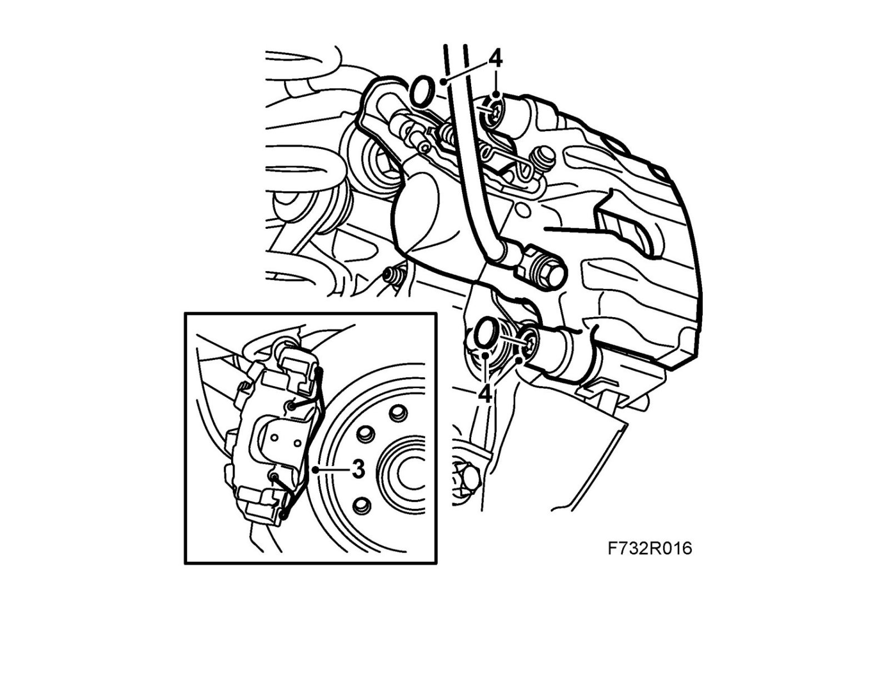
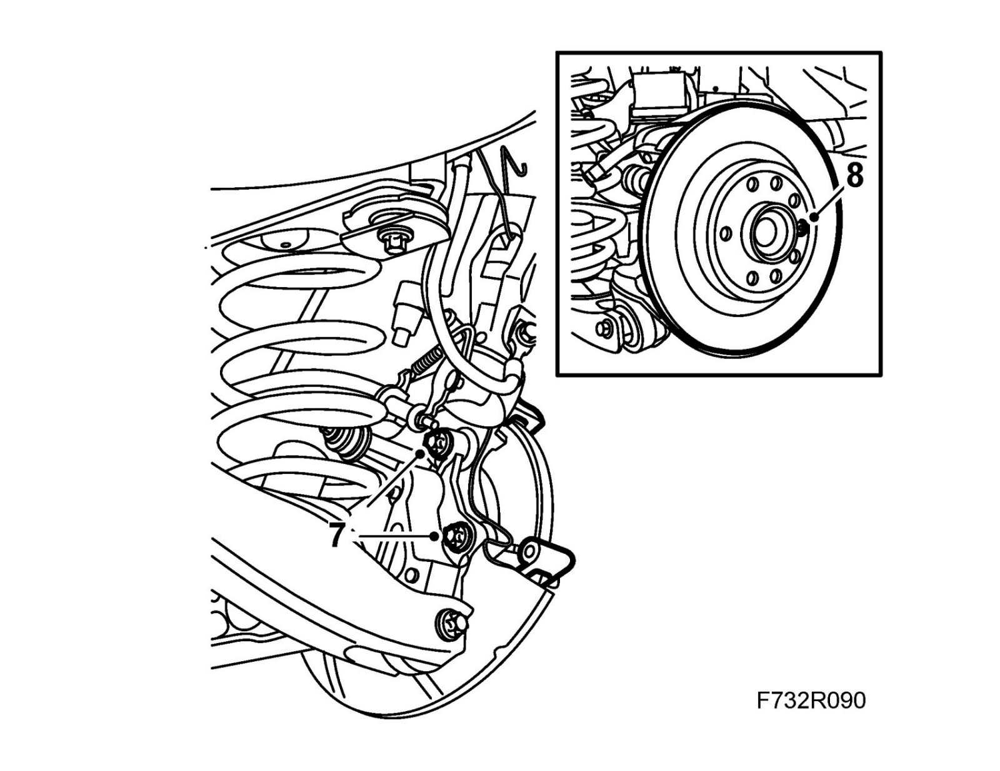
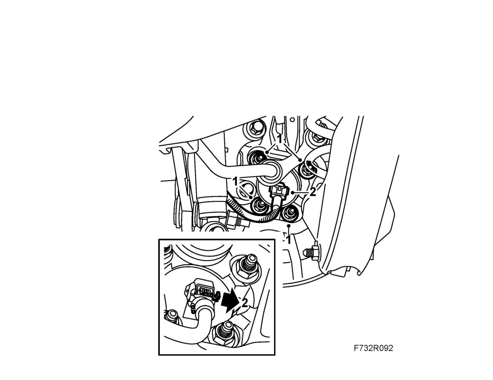
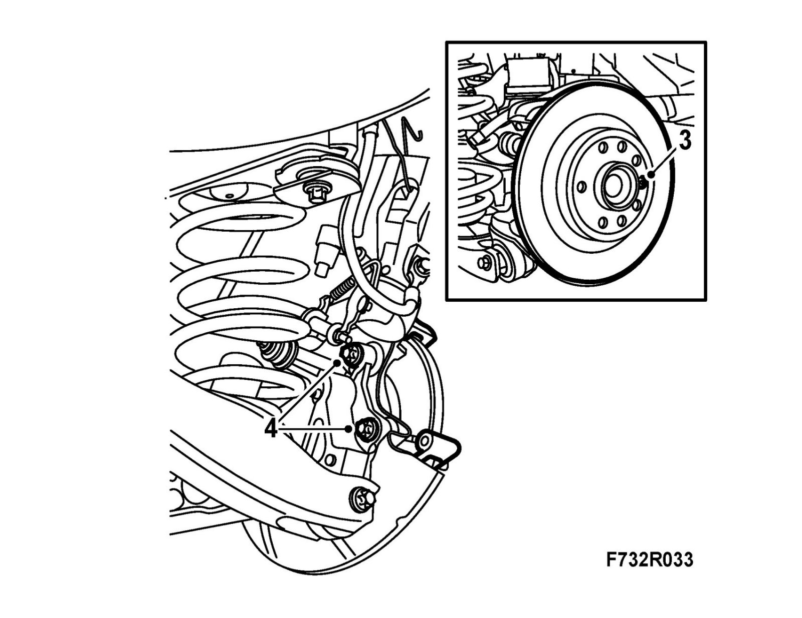
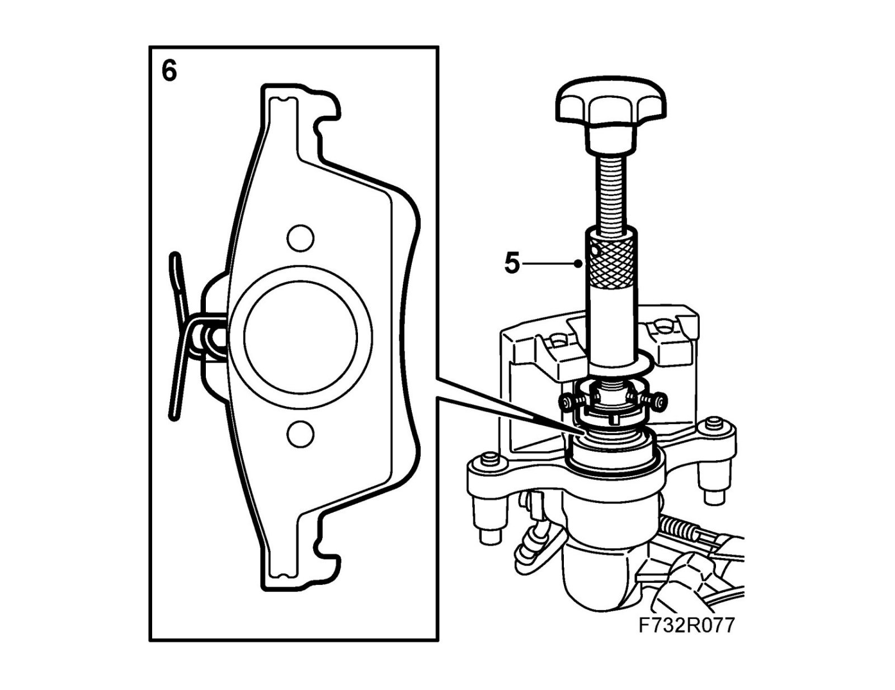
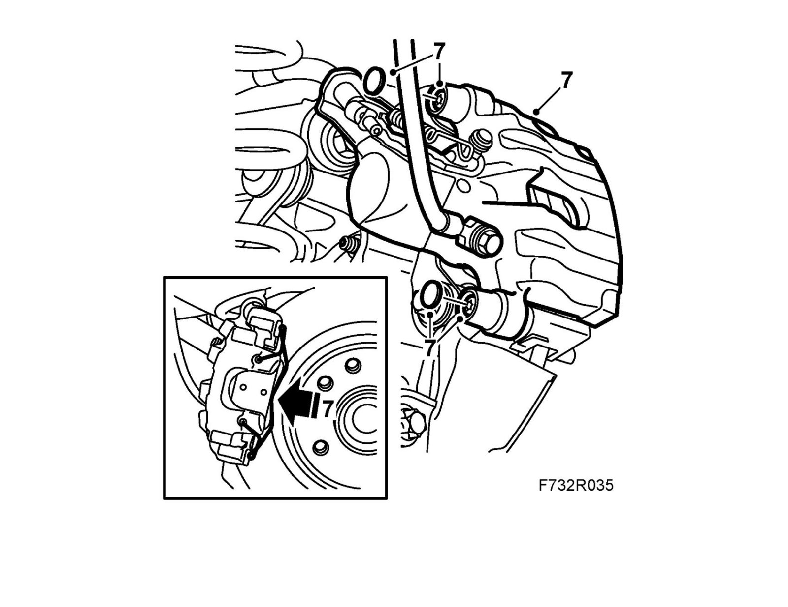

Wheel Hub, Rear
Wheel hub, rearTo remove
1. Raise the car.
2. Remove the wheel.
3. Remove the retaining spring from the brake caliper.

4. Remove the protective covers. Lift off the hydraulic body and suspend it with a hook in the brake pipe holder.
Important
Be careful that the brake pipes do not get damaged.
5. Remove the brake pads.
6. Undo the bolt of the upper suspension arm to gain access to the bolt of the brake caliper holder.
Note
Do not tighten the suspension arm bolt fully.
7. Remove the brake caliper holder.

8. Remove the brake disc lock bolt. Lift off the brake disc.
9. Remove the wheel sensor connector.
10. Remove the hub and the brake shield.
To fit
1. Clean the contact surfaces. Fit the hub and the brake shield with new nuts.
Tightening torque 50 Nm +30° (40 lbf ft +30°)

2. Fit the wheel sensor connector.
3. Clean the contact surfaces between the hub and the brake disc.
Fit the brake disc and the lock bolt.
Tightening torque 7 Nm (5 lbf ft)

4. Clean the contact surfaces between the brake caliper holder and the steering swivel member.
Fit the brake caliper holder with 74 96 268 Nut lock.
Tightening torque 130 Nm +45° (96 lbf ft +45°)
5. Screw in the brake piston using 89 96 969 Resetting tool and 89 96 977 Adapter.

6. Fit the brake pads.
7. Fit the hydraulic body.
Tightening torque 28 Nm (21 lbf ft)
Fit the protective covers.
Fit the retaining spring to the brake caliper.

8. Tighten the suspension arm bolt.
Tightening torque 125 Nm +135° (92 lbf ft +135°)
9. Fit the wheel.
10. Lower the car to the floor.
11. Depress the brake pedal several times to press out the self adjustment of the brake pistons and the parking brake.